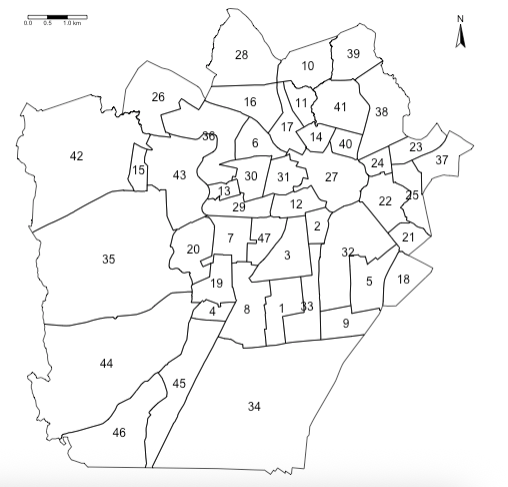
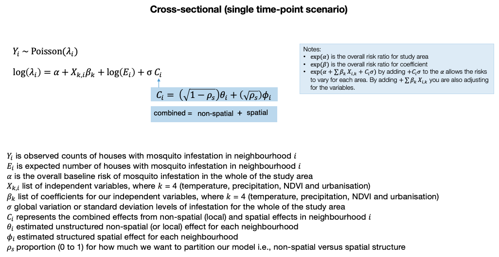
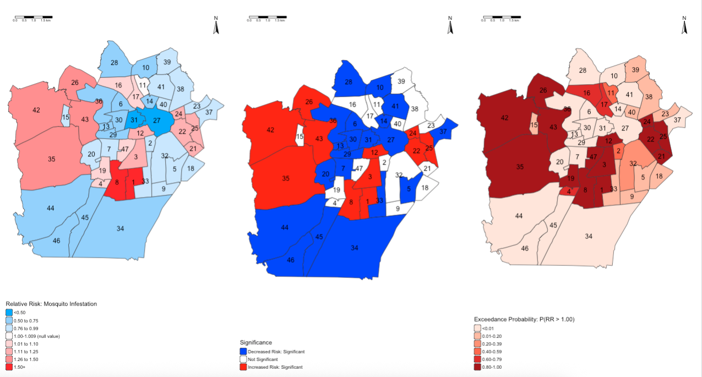

setwd("C:/Users/AccountName/Desktop/GEOG0114/Week 9")Week 9: Spatial Bayesian Risk Modelling
1 Introduction
This week’s practical you will be introduced to spatial & spatiotemporal risk models for the quantification of the risk of experiencing discrete outcomes (e.g., disease, crime or disaster-related etc.) using R-INLA.
This exercise will focus on mosquito infestation data in Brazilian neighbourhoods in Campina Grande. Here, we will use a series of spatial models, within a Bayesian framework, to quantify the overall and area-specific risk of mosquito infestation in relation to a number of environmental drivers (i.e., temperature, precipitation and urbanisation) across neighbourhoods in Campina Grande.
The chapter is in two parts:
- Part A: Spatial Risk Modelling on Cross-sectional Areal Data
- Part B: Spatial temporal Modelling
Let’s begin!
1.1 Datasets & setting up the work directory
Before you begin do make sure to download all data by clicking here. Create a folder on called “Week 9” within your “GEOG0114” folder stored in the desktop of your personal computer. Make sure to extract all data from the zip folder and store it into “Week 9” folder. Open a new R script and set the work directory to Week 9’s folder.
For Windows, the work directory will be:
For MAC, the work directory will be:
setwd("/Users/AccountName/Desktop/GEOG0114/Week 9")1.2 Loading and installing packages
We will need to load the following packages:
sf: Simple Featurestmap: Thematic Mappingspdep: Spatial Dependence (Weighting schemes & Spatial Statistics)sp: Package for providing classes for spatial data (points, lines, polygons and grids)
# Load packages using library() function
library("sf")
library("tmap")
library("spdep")
library("sp")The above packages sf, tmap, spdep & sp should have been installed in the previous session(s). We will need to install the following packages:
SpatialEpi: provides functions for computing the expected number needed for the models in this exercise.INLA: Package for performing a full Bayesian analysis using Integrated Nested Laplace Approximation (INLA). It provides functions such asinla()to perform the spatial/spatiotemporal risk models.
# install the SpatialEpi (version 1.2.8)
install.packages("SpatialEpi")
# install INLA (version 25.10.19)
install.packages("INLA",repos=c(getOption("repos"),INLA="https://inla.r-inla-download.org/R/stable"), dep=TRUE)
# activate package to use
library("SpatialEpi")
library("INLA")1.3 PART A: Spatial Risk Modelling on Cross-sectional Areal Data
1.3.1 Loading dataset
Let us import the cross-sectional dataset called Lira_2017_cross_sectional.csv:
Lira_2017_cross_sectional <- read.csv("Lira_2017_cross_sectional.csv")Let us import the shapefile for Campina Grande:
campina_grande_neighbourhoods <- read_sf("Campina_Grande_Lira2017.shp")The code chunk below generates an empty map for Campina Grande to show its spatial configuration:
tm_shape(campina_grande_neighbourhoods) +
tm_polygons(fill_alpha = 0, col = "black") +
tm_text("NeighNum") +
tm_compass(position = c("right", "top")) +
tm_scalebar(position = c("left", "top")) +
tm_layout(frame = FALSE)
1.3.2 Data preparation
1.3.2.1 Expected numbers
In order to estimate the risk of infestation, we will need to calculate the expected number of households from the reference population that potentially be infested - this is calculated from the denominators (i.e., reference population size i.e., total number of households within a neighbourhood) and the observed number of households identified to be infested.
We can use the expected() function to compute this for each neighbourhood:
Lira_2017_cross_sectional$Expected <- expected(
population = Lira_2017_cross_sectional$Total,
cases = Lira_2017_cross_sectional$InfestedNum,
n.strata = 1)We are rounding the estimated expected numbers to a whole number:
Lira_2017_cross_sectional$Expected <- round(Lira_2017_cross_sectional$Expected, .1)1.3.2.2 Spatial joining
Our records on mosquito infestation at the moment is a non-spatial data frame, we therefore need to merge the Lira_2017_cross_sectional object to the Campina Grande shape file. Let us call this new object analysis_cross_data:
analysis_cross_data <- merge(campina_grande_neighbourhoods,
Lira_2017_cross_sectional,
by.x = c("osmID", "NeighNum", "NeighbNam"),
by.y = c("osmID", "NeighNum", "NeighbNam")
)
Note
Notice how the spatial join has been performed using 3-key columns. It is a 1-to-1 join based on three columns where we are being insanely strict to ensure the joining has been performed perfectly.
1.3.2.3 Creating the adjacency matrix
The next important step is to create an adjacency matrix not only to represent the neighbourhood structure, but account for the structured part in our risk model that corresponds to the spatial effects. This creates a list of neighbourhood areas that shares borders with each other contiguous boundaries. We can create these with poly2nb() and nb2INLA().
So, first thing, we ENSURE that areas are arranged in ascending order based on the area ID number:
analysis_cross_data <- analysis_cross_data[order(analysis_cross_data$NeighNum),]
row.names(analysis_cross_data) <- 1:nrow(analysis_cross_data)Based on this clean arrangement - we are generating the adjacency matrix:
# create the neighbourhood matrix as an INLA object
adjacencyMatrix <- poly2nb(analysis_cross_data)
# ensure names are carried over into adjacency matrix object
names(adjacencyMatrix) <- analysis_cross_data$NeighbNam
# check first 10 neighbourhoods, and cross-check with map
head(adjacencyMatrix, n = 10)$`Jardim Paulistano`
[1] 3 8 33 34
$`Estação Velha`
[1] 3 12 27 32 33
$`Liberdade`
[1] 1 2 8 12 33 47
$`Presidente Médici`
[1] 8 19 44 45
$`Sandra Cavalcante`
[1] 9 18 21 32
$`Monte Santo`
[1] 16 17 27 30 31 36
$`Santa Rosa`
[1] 8 19 20 29 43 47
$`Cruzeiro`
[1] 1 3 4 7 19 34 45 47
$`Itararé`
[1] 5 32 33 34
$`Jardim Continental`
[1] 11 16 17 28 39 41This shows the first 10 neighbourhoods in the list, and which neighbourhoods are sharing borders. You can cross-check the information with the map to ensure that the adjacency matrix is in order. This is just for sanity-checks!
We can now create the adjacencyMatrix object into readable graph structure for inla() function:
nb2INLA("adjacencyObject.adj", adjacencyMatrix)
g <- inla.read.graph(filename = "adjacencyObject.adj")1.3.2.4 Model set-up
Do you remember the structured and unstructured parts of the model shown on lecture notes (slide 25)?

Here, we basically need to define unique ID numbers for the structured and unstructured areas, as they will be passed into the spatial model. This is basically indexing each neighbourhood with a unique value (i.e., in-line with the NeighNum column) and having two separate columns for structured and unstructured areas:
analysis_cross_data$id_area_structured <- 1:nrow(analysis_cross_data)
analysis_cross_data$id_area_unstructured <- 1:nrow(analysis_cross_data)We define the formula into an object called infestation_risk. The outcome InfestNum written on the left side. Whilst, on the right side is 1 (intercept), Temperature, Precipitation and Urbanisation.
The structured part of the model is captured in f(id_area_structured, model = "besag", graph = g, scale.model = TRUE) function which includes the objects:
id_area_structured.- The model specification i.e., “besag” i.e., Besag-Mollie-York model.
- Adjacency matrix
gthat we created withnb2INLA()andinla.read.graph()function.
The unstructured part of the model is captured in f(id_area_unstructured, model = "iid"). The full regression model is coded as follows:
infestation_risk <- InfestedNum ~ 1 + Temperature + Precipitation + Urbanisation +
f(id_area_structured, model = "besag", graph = g, scale.model = TRUE) + f(id_area_unstructured, model = "iid")With the formula object infestation_risk at the ready, we can now fit the model by calling the inla() function. The results will be stored in the object results_cross_sectional. The arguments of this function are as follows:
formulawould be our objectinfestation_risk- the
familyoption is specified asfamily = "poisson"since our outcome is counts datais our data frame objectanalysis_cross_dataEis expected counts optionE. We tell it that the column in our data frameExpectedcontains the expected values.- We want the distributions of our results, and so we use the option
control.predictor = list(compute = TRUE). - Finally, the option
control.compute = list(dic = TRUE, waic = TRUE, cpo = TRUE, return.marginals.predictor = TRUE)we churn out the model diagnostics (i.e., DIC, WAIC and CPO) and exceedance probabilities.
results_cross_sectional <- inla(infestation_risk,
family = "poisson",
data = analysis_cross_data,
E = Expected,
control.predictor = list(compute = TRUE),
control.compute = list(dic = TRUE, waic = TRUE, cpo = TRUE, return.marginals.predictor = TRUE)
)1.3.2.5 Reporting of overall risks
We can print the results using the summary() function.
summary(results_cross_sectional)Time used:
Pre = 2.08, Running = 0.801, Post = 0.0548, Total = 2.94
Fixed effects:
mean sd 0.025quant 0.5quant 0.975quant mode kld
(Intercept) -2.907 9.023 -20.676 -2.904 14.847 -2.904 0
Temperature 0.085 0.298 -0.501 0.085 0.673 0.085 0
Precipitation 0.005 0.016 -0.026 0.005 0.035 0.005 0
Urbanisation -0.053 0.239 -0.524 -0.053 0.417 -0.053 0
Random effects:
Name Model
id_area_structured Besags ICAR model
id_area_unstructured IID model
Model hyperparameters:
mean sd 0.025quant 0.5quant 0.975quant mode
Precision for id_area_structured 21934.47 24101.44 1446.77 14369.07 85923.64 3936.87
Precision for id_area_unstructured 6.53 1.44 4.11 6.39 9.74 6.15
Deviance Information Criterion (DIC) ...............: 448.20
Deviance Information Criterion (DIC, saturated) ....: 93.29
Effective number of parameters .....................: 45.85
Watanabe-Akaike information criterion (WAIC) ...: 435.92
Effective number of parameters .................: 24.13
Marginal log-Likelihood: -327.26
CPO, PIT is computed
Posterior summaries for the linear predictor and the fitted values are computed
(Posterior marginals needs also 'control.compute=list(return.marginals.predictor=TRUE)')We want the regression coefficients for Temperature, Precipitation and Urbanisation to as relative risk, and so we exponentiate the result shown in the Fixed effects table using the exp() function:
# extract the results to report them as relative risks
options(scipen = 7)
fixed <- results_cross_sectional$summary.fixed
RR_table <- exp(fixed[, c("mean", "0.025quant", "0.5quant", "0.975quant")])
# use rows 2, 3 and 4
RR_table[c(2:4),] mean 0.025quant 0.5quant 0.975quant
Temperature 1.0891734 0.6057726 1.0890582 1.959494
Precipitation 1.0048164 0.9744623 1.0048152 1.036122
Urbanisation 0.9483597 0.5924203 0.9484865 1.517016
Note
Temperature shows an overall increased risk (RR: 1.08, 95% Credibility Intervals = 0.61 to 1.95) of infestation in 2017. Precipitation shows a negligible increased risk of mosquito infestation (RR: 1.004, 95% Credibility Intervals = 0.97 to 1.03); whereas, urbanisation has a decreased risk of infestation (RR: 0.94, 95% Credibility Intervals = 0.59 to 1.51). All results are not significant because the null value of 1 is included between its lower and upper 95% Credibility Intervals.
1.3.2.6 Reporting of posterior distributions and exceedance probability
Here, we examine how plausible these results are through density plots since we do not deal with p-values in Bayesian statistics. We are going to extract the posterior estimates (i.e., all plausible values for the relative risks) and plot them on a density plot.
Extract the distribution for each independent from the result object:
beta_temp <- inla.smarginal(results_cross_sectional$marginals.fixed$Temperature)
beta_prec <- inla.smarginal(results_cross_sectional$marginals.fixed$Precipitation)
beta_urbn <- inla.smarginal(results_cross_sectional$marginals.fixed$Urbanisation)Render the extraction into a data frame:
post_dist_beta <- data.frame(beta_temp, beta_prec, beta_urbn)We have the value (x) i.e., possible estimate for it relationship with infestation, and its plausibility (y). We need to further tidy this data frame up by renaming the columns accordingly:
colnames(post_dist_beta)[1] <- "beta_temp_coef"
colnames(post_dist_beta)[2] <- "beta_temp_density"
colnames(post_dist_beta)[3] <- "beta_prec_coef"
colnames(post_dist_beta)[4] <- "beta_prec_density"
colnames(post_dist_beta)[5] <- "beta_urbn_coef"
colnames(post_dist_beta)[6] <- "beta_urbn_density"Next, convert the coefficients to relative risk:
# convert to relative risk
post_dist_beta$beta_temp_coef <- exp(post_dist_beta$beta_temp_coef)
post_dist_beta$beta_prec_coef <- exp(post_dist_beta$beta_prec_coef)
post_dist_beta$beta_urbn_coef <- exp(post_dist_beta$beta_urbn_coef)We are going to use temperature as an example of summarising and visualising its posterior distribution:
summary(post_dist_beta$beta_temp_coef) Min. 1st Qu. Median Mean 3rd Qu. Max.
0.2786 0.7192 1.0893 1.3472 1.6517 4.2711# generate probability density plot of the posterior samples
plot(post_dist_beta$beta_temp_coef, post_dist_beta$beta_temp_density, type = "l",
main = "Posterior of Relative Risk for Temperature",
xlab = "Estimated Relative Risk",
ylab = "Posterior Probability Density (Plausibility)")
# Add vertical dashed line at the mean
abline(v = 1.0891722, lty = "dashed", col = "darkgrey", lwd = 4)
# add vertical line for the lower 95% CrI value
abline(v = 0.6057726, lty = "dashed", col = "darkgrey", lwd = 2)
# add vertical line for the upper 95% CrI value
abline(v = 1.959489, lty = "dashed", col = "darkgrey", lwd = 2)
# add vertical line for Null Value
abline(v = 1.00, col = "red", lwd = 2)
Note
Here, it is showing all the possible values of how temperature is related to mosquito infestation in terms of impact and risk given the dataset we have. The relative risk for mosquito infestation given temperature can be anywhere from 0.278 (reduced risk) to 4.271 (increased risk). But from the graph, it indicates that the most plausible relative risk estimate is 1.089 because it has the highest density in our posterior distribution.
To guage levels of certainly about this estimated risk, we can calculate the probability that the relative risk is 1.089 or above by using inla.pmarginal():
prob <- 1 - inla.pmarginal(1.089, exp(results_cross_sectional$marginals.fixed$Temperature))
prob[1] 0.7316743The probability of observing a relative risk of mosquito infestation being 1.089 or above, given the environmental levels of temperature, is 0.731 or 73.1%, which is quite high.
This is basically the area under density curve when RR > 1.089:
x <- post_dist_beta$beta_temp_coef
y <- post_dist_beta$beta_temp_density
threshold_rr <- 1.089
# Plot the posterior density line
plot(x, y, type = "l",
main = "Exceedance Probability [P(RR > 1)] = 0.789 or 78.9%",
xlab = "Estimated Relative Risk",
ylab = "Posterior Probability Density (Plausibility)")
# Identify region above the threshold
idx <- which(x >= threshold_rr)
# Shade the area under the curve for x > threshold
polygon(
c(x[idx], rev(x[idx])),
c(y[idx], rep(0, length(idx))),
col = "#fee0d2", # or any color you want
border = NA
)
# Add vertical dashed line at the mean
abline(v = 1.0891722, lty = "dashed", col = "darkgrey", lwd = 4)
# add vertical line for the lower 95% CrI value
abline(v = 0.6057726, lty = "dashed", col = "darkgrey", lwd = 2)
# add vertical line for the upper 95% CrI value
abline(v = 1.959489, lty = "dashed", col = "darkgrey", lwd = 2)
# add vertical line for Null Value
abline(v = 1.00, col = "red", lwd = 2)
This is called the Exceedance Probability. Here is extra code showing the posterior distribution for precipitation and urbanisation, along with the exceedance probability to guage the levels of certainty of their relative risk.
Click here to show code:
# precipitation
plot(post_dist_beta$beta_prec_coef, post_dist_beta$beta_prec_density, type = "l",
main = "Posterior of Relative Risk for Precipitation",
xlab = "Estimated Relative Risk",
ylab = "Posterior Probability Density (Plausibility)")
# Add vertical dashed line at the mean
abline(v = 1.0048164, lty = "dashed", col = "darkgrey", lwd = 4)
# add vertical line for the lower 95% CrI value
abline(v = 0.9744624, lty = "dashed", col = "darkgrey", lwd = 2)
# add vertical line for the upper 95% CrI value
abline(v = 1.036122, lty = "dashed", col = "darkgrey", lwd = 2)
# add vertical line for Null Value
abline(v = 1.00, col = "red", lwd = 2)
prob_prec <- 1 - inla.pmarginal(1.0048164, exp(results_cross_sectional$marginals.fixed$Precipitation))
prob_prec
# urbanisation
plot(post_dist_beta$beta_urbn_coef, post_dist_beta$beta_urbn_density, type = "l",
main = "Posterior of Relative Risk for Urbanisation",
xlab = "Estimated Relative Risk",
ylab = "Posterior Probability Density (Plausibility)")
# Add vertical dashed line at the mean
abline(v = 0.9483598, lty = "dashed", col = "darkgrey", lwd = 4)
# add vertical line for the lower 95% CrI value
abline(v = 0.5924214, lty = "dashed", col = "darkgrey", lwd = 2)
# add vertical line for the upper 95% CrI value
abline(v = 1.517014, lty = "dashed", col = "darkgrey", lwd = 2)
# add vertical line for Null Value
abline(v = 1.00, col = "red", lwd = 2)
prob_urbn <- 1 - inla.pmarginal(0.9483598, exp(results_cross_sectional$marginals.fixed$Urbanisation))
prob_urbn1.3.2.7 Mapping the Relative Risks (RR)
We can extract the area-specific risks (already exponentiated) for each neighbourhood of Campina Grande by pulling them using $summary.fitted.values and storing them into the object riskratio. These results can be extracted using the following code:
riskratio <- results_cross_sectional$summary.fitted.values
head(riskratio, n=10)Slot the area-specific risk estimates into the spatial data frame object analysis_cross_data. This should accurately align with the right areas from the shapefile accordingly:
analysis_cross_data$RR <- riskratio[, "mean"] # Relative risk
analysis_cross_data$LL <- riskratio[, "0.025quant"] # Lower credibility limit
analysis_cross_data$UL <- riskratio[, "0.975quant"] # Upper credibility limit
# check
head(analysis_cross_data)Let’s visual the areas with the low and high risks values, as well as show an additional map where areas are (and not) statistically significant.
Let us get a feel of the distribution for area-specific relative risks to inform how we create the risk categories for our map and legends:
summary(analysis_cross_data$RR) Min. 1st Qu. Median Mean 3rd Qu. Max.
0.2799 0.7104 0.9003 0.9218 1.1080 1.5497 The range is between 0.2799 and 1.5497. We are going to create 8 groups, with the mid-point being 1.
RiskCategorylist <- c("<0.50", "0.50 to 0.75", "0.76 to 0.99", "1.00-1.009 (null value)",
"1.01 to 1.10", "1.11 to 1.25", "1.26 to 1.50", "1.50+")We are creating a divergent colour scheme for the above categories - from extreme blues to extreme reds.
RRPalette <- c("#33a6fe","#98cffe","#cbe6fe","#fef9f9","#fed5d5","#feb1b1","#fe8e8e","#fe2424")Now, we generate new categorical variable called RelativeRiskCat by categorising the continous relative risk values in accordance with the risk categories we created in the RiskCategorylist object:
analysis_cross_data$RelativeRiskCat <- NA
analysis_cross_data$RelativeRiskCat[analysis_cross_data$RR> 0 & analysis_cross_data$RR <= 0.50] <- -3
analysis_cross_data$RelativeRiskCat[analysis_cross_data$RR> 0.50 & analysis_cross_data$RR <= 0.75] <- -2
analysis_cross_data$RelativeRiskCat[analysis_cross_data$RR> 0.75 & analysis_cross_data$RR < 1] <- -1
analysis_cross_data$RelativeRiskCat[analysis_cross_data$RR>= 1 & analysis_cross_data$RR < 1.01] <- 0
analysis_cross_data$RelativeRiskCat[analysis_cross_data$RR>= 1.01 & analysis_cross_data$RR <= 1.10] <- 1
analysis_cross_data$RelativeRiskCat[analysis_cross_data$RR> 1.10 & analysis_cross_data$RR <= 1.25] <- 2
analysis_cross_data$RelativeRiskCat[analysis_cross_data$RR> 1.25 & analysis_cross_data$RR <= 1.50] <- 3
analysis_cross_data$RelativeRiskCat[analysis_cross_data$RR> 1.50 & analysis_cross_data$RR <= 2] <- 4Next, we are going to create categories to define if an area has significant increase or decrease or not all. This categorisation is based on the area-specific 95% Credibility Intervals contained in columns LL and UL. LL is the lowest limit in the interval, while the UL is the upper limit.
The code is as follows:
analysis_cross_data$Significance <- NA
analysis_cross_data$Significance[analysis_cross_data$LL<1 & analysis_cross_data$UL>1] <- 0 # NOT SIGNIFICANT
analysis_cross_data$Significance[analysis_cross_data$LL==1 | analysis_cross_data$UL==1] <- 0 # NOT SIGNIFICANT
analysis_cross_data$Significance[analysis_cross_data$LL>1 & analysis_cross_data$UL>1] <- 1 # SIGNIFICANT INCREASE
analysis_cross_data$Significance[analysis_cross_data$LL<1 & analysis_cross_data$UL<1] <- -1 # SIGNIFICANT DECREASELastly, we compute the exceedance probabilities for each area. This will create a new column called ExceedProb in our spatial data frame:
# computes exceedance probabilities
analysis_cross_data$ExceedProb <- sapply(results_cross_sectional$marginals.fitted.values,
FUN = function(marg){1 - inla.pmarginal(q = 1.00, marginal = marg)})
# rounds it to three decimal places
analysis_cross_data$ExceedProb <- round(analysis_cross_data$ExceedProb, 3)
Note
For the exceedance probabilities, usually, we are interested in computing the probability of an area generally having an increased risk of a particular outcome. Here, we have set q = 1.00 to compute P(RR > 1.00) for a given area.
We can categorise these probabilities and create a unique labels for its map and legends:
# categorisation
analysis_cross_data$ProbCat <- NA
analysis_cross_data$ProbCat[analysis_cross_data$ExceedProb>=0 & analysis_cross_data$ExceedProb< 0.01] <- 1
analysis_cross_data$ProbCat[analysis_cross_data$ExceedProb>=0.01 & analysis_cross_data$ExceedProb< 0.20] <- 2
analysis_cross_data$ProbCat[analysis_cross_data$ExceedProb>=0.20 & analysis_cross_data$ExceedProb< 0.40] <- 3
analysis_cross_data$ProbCat[analysis_cross_data$ExceedProb>=0.40 & analysis_cross_data$ExceedProb< 0.60] <- 4
analysis_cross_data$ProbCat[analysis_cross_data$ExceedProb>=0.60 & analysis_cross_data$ExceedProb< 0.80] <- 5
analysis_cross_data$ProbCat[analysis_cross_data$ExceedProb>=0.80 & analysis_cross_data$ExceedProb<= 1.00] <- 6
# labeling for legend
ProbCategorylist <- c("<0.01", "0.01-0.20", "0.20-0.39", "0.40-0.59", "0.60-0.79", "0.80-1.00")At this point, are dataset should be in order to produce the following outputs:
- Map of the relative risk of mosquito infestation
- Map of statistical significance
- Map of exceedance probabilities
map_A <- tm_shape(analysis_cross_data) +
tm_polygons(fill = "RelativeRiskCat",
fill.scale = tm_scale_categorical(values = RRPalette, labels = RiskCategorylist),
fill.legend = tm_legend(frame = FALSE, "Relative Risk: Mosquito Infestation")) +
tm_text("NeighNum") +
tm_compass(position = c("right", "top")) +
tm_scalebar(position = c("left", "top")) +
tm_layout(frame = FALSE)
map_B <- tm_shape(analysis_cross_data) +
tm_polygons(fill = "Significance",
fill.scale = tm_scale_categorical(values = c("blue", "white", "red"),
labels = c("Decreased Risk: Significant", "Not Significant", "Increased Risk: Significant")),
fill.legend = tm_legend(frame = FALSE, title = "Significance")) +
tm_text("NeighNum") +
tm_compass(position = c("right", "top")) +
tm_scalebar(position = c("left", "top")) +
tm_layout(frame = FALSE)
map_C <- tm_shape(analysis_cross_data) +
tm_polygons(fill = "ProbCat",
fill.scale = tm_scale_categorical(values = "brewer.reds", labels = ProbCategorylist),
fill.legend = tm_legend(frame = FALSE, title = "Exceedance Probability: P(RR > 1.00)")) +
tm_text("NeighNum") +
tm_compass(position = c("right", "top")) +
tm_scalebar(position = c("left", "top")) +
tm_layout(frame = FALSE)
tmap_arrange(map_A, map_B, map_C, nrow = 1)
Note
INTERPRETATION: The following adjacent neighbourhoods i.e., 1-3-8-12; 26-35-42-43; and 22-24-25, are neighbourhoods with households which are at high risk of mosquito infestation given the levels of temperature, precipitation and degree of urbanisation within those areas. This increased risk is statistically significant, which high-levels of certainty based on the exceedance probabilities being somewhere around 80-100%.
1.4 PART B: Spatial Temporal Modelling on Longitudinal Areal Data
This section will be quite brief. It is essential a repeat of PART A. Only difference is the model formula and data preparation. We will cover these aspects briefly on what needs to be done to get the results.
1.4.1 How to execute spatiotemporal model in INLA
analysis_long_data <- read.csv("Lira_2017_Longitudinal.csv")This dataset had already be been prepared with the expected value in place, and records aligned by area and time. We already have our spatial adjacency matrix created from PART A. But we will need to create the unique index for structured, unstructured and temporal effects in order to create our spatial temporal model:
analysis_long_data$id_area_structured <- analysis_long_data$NeighNum
analysis_long_data$id_area_unstructured <- analysis_long_data$NeighNum
analysis_long_data$id_time <- analysis_long_data$LIRAaThe model is similar to one used in PART A with the addition of the temporal effects:
# create formula for spatio-temporal model
infestation_risk_temporal <- InfestedNum ~ 1 + Temperature + Precipitation + Urbanisation +
f(id_area_structured, model = "besag", graph = g, scale.model = TRUE) +
f(id_area_unstructured, model = "iid") +
id_timeWe can pass the spatial temporal in inla() function to get our overall and area-specific risk estimates accordingly:
results_longitudinal <- inla(infestation_risk_temporal,
family = "poisson",
data = analysis_long_data,
E = Expected,
control.predictor = list(compute = TRUE),
control.compute = list(dic = TRUE, waic = TRUE, cpo = TRUE, return.marginals.predictor = TRUE)
)Just like before, we can summary of the entire results unexponentiated:
summary(results_longitudinal)Time used:
Pre = 2.12, Running = 0.881, Post = 0.0909, Total = 3.09
Fixed effects:
mean sd 0.025quant 0.5quant 0.975quant mode kld
(Intercept) 5.077 0.436 4.221 5.077 5.932 5.077 0
Temperature -0.176 0.010 -0.197 -0.176 -0.156 -0.176 0
Precipitation -0.005 0.002 -0.009 -0.005 -0.002 -0.005 0
Urbanisation 0.050 0.204 -0.351 0.050 0.451 0.050 0
id_time -0.001 0.158 -0.311 -0.001 0.309 -0.001 0
Random effects:
Name Model
id_area_structured Besags ICAR model
id_area_unstructured IID model
Model hyperparameters:
mean sd 0.025quant 0.5quant 0.975quant mode
Precision for id_area_structured 21911.69 24014.91 1446.68 14373.55 85675.11 3938.08
Precision for id_area_unstructured 6.69 1.44 4.25 6.56 9.91 6.32
Deviance Information Criterion (DIC) ...............: 1700.76
Deviance Information Criterion (DIC, saturated) ....: 796.86
Effective number of parameters .....................: 45.12
Watanabe-Akaike information criterion (WAIC) ...: 2009.00
Effective number of parameters .................: 267.02
Marginal log-Likelihood: -968.53
CPO, PIT is computed
Posterior summaries for the linear predictor and the fitted values are computed
(Posterior marginals needs also 'control.compute=list(return.marginals.predictor=TRUE)')We can then print the results accordingly as relative risks:
# extract the results report them as relative risks
options(scipen = 7)
fixed_temp <- results_longitudinal$summary.fixed
RR_table_temp <- exp(fixed_temp[, c("mean", "0.025quant", "0.5quant", "0.975quant")])
RR_table_temp[c(2:5),] mean 0.025quant 0.5quant 0.975quant
Temperature 0.8383812 0.8213389 0.8383813 0.8557769
Precipitation 0.9948833 0.9915015 0.9948833 0.9982766
Urbanisation 1.0512875 0.7039343 1.0513599 1.5694346
id_time 0.9989510 0.7325408 0.9989511 1.3622490Last part shows the extraction of these estimates to be ready for mapping them temporally:
# extract the relative risk from $summary.fitted.values
riskratio_temp <- results_longitudinal$summary.fitted.values
# slot the extracted relative risk results to temporal dataset
analysis_long_data$RR <- riskratio_temp[, "mean"] # Relative risk
analysis_long_data$LL <- riskratio_temp[, "0.025quant"] # Lower credibility limit
analysis_long_data$UL <- riskratio_temp[, "0.975quant"] # Upper credibility limit
# calculate the exceedance probability for each area and time
analysis_long_data$ExceedProb <- sapply(results_longitudinal$marginals.fitted.values,
FUN = function(marg){1 - inla.pmarginal(q = 1.00, marginal = marg)})
# round the probability values to 3 decimal places
analysis_long_data$ExceedProb <- round(analysis_long_data$ExceedProb, 3)The categorisation of the relative risks, significance and exceedance probabilities can be applied the same way as we did in PART A.
Split the dataset accordingly by time:
analysis_long_data_jan <- analysis_long_data[analysis_long_data$id_time == 1,]
analysis_long_data_apr <- analysis_long_data[analysis_long_data$id_time == 2,]
analysis_long_data_jul <- analysis_long_data[analysis_long_data$id_time == 3,]Each individual dataset can be linked with the Campina Grande shapefile and visualised accordingly.